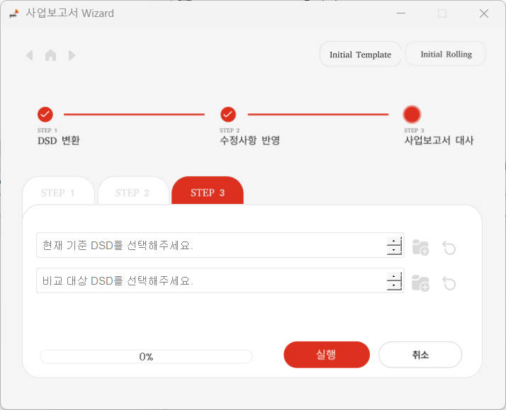
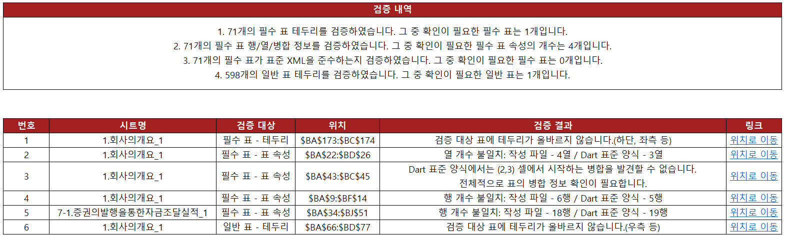

본 단계는 최초 사업보고서 Initial Template를 생성하는 단계입니다.
다음의 자료를 토대로 엑셀 기반의 사업보고서 작성을 위한 Template를 생성합니다.
(1) 전년 동기 DSD
(2) 직전 분기 DSD
(3) 사업보고서 작성 부서 엑셀 파일
Ex) 2023년 기말 사업보고서 작성 시
(1) 전년 동기 DSD는 2022년 기말 사업보고서 DSD이며,
(2) 직전 분기 DSD는 2023년 3분기 보고서 DSD입니다.
작성 부서 엑셀 파일 A열에 아래와 같이 부서명을 아래 방향으로 기재합니다.
만일 동일 부서 내 담당자가 여러명인 경우 회계팀1 / 회계팀2 등으로 기재 부탁 드립니다.
(작성하시는 보고서 종류에 따라서 사업보고서 / 반기보고서 / 분기보고서 각각 수행)
위 작업을 최초로 수행할 특정 경로에 자동으로 관련 양식이 업데이트 되며 사업보고서 Wizard는 이를 이용합니다.
Input DSD 파일이 최신 버전이 아닐 시 Dart 편집기로 실행 시 아래와 같은 안내 문구가 생성되고 "예"를 눌러 최신 버전으로 변환한 후 사용하셔야 이후 단계에서 최신 버전의 사업보고서가 생성됩니다.
이는 Input DSD는 최신 버전인 반면, 관련 양식은 존재하지 않기 때문에 발생하는 문제입니다.
본 단계는 1-(1) 에서 생성된 엑셀 파일(xlsm)을 토대로 작성 부서 별 엑셀 파일(xlsm) N개를 생성합니다.
1-(1)에서 생성한 사업보고서 Initial Template를 기반으로 아래와 같은 작업을 진행해주셔야 합니다.
(1) 사업보고서 작성 영역을 각 사업부 R&R에 맞게 분배
(2) 사업보고서 내용 상 검증이 필요한 금액의 경우 검증표에 맵핑
(3) 부서별 Template 생성 결과인 separate_template 폴더 sharepoint 상에 업로드 및 "최종 파일 리스트.xlsx" 작성
아래 화면에서 회계팀에서 빨간색으로 표시된 영역이 배정되었습니다.(10~13행)
또한 표의 영역이기 때문에 "⤷테이블 끝" 부분까지 올바르게 할당된 것을 알 수 있습니다.
Initial Template 상 DSD 시트
Ex) 사업보고서라는 제목(6행)을 회계팀, 법무팀 등에 동시에 배정한 경우
아래 화면 상 자금팀과 회계팀의 자본금은 동일하나, 경영기획팀의 자본금이 상이한 것을 알 수 있습니다.
관련 부분을 최초에 한번만 맵핑해주게 되면 추후 부서별 Template으로 나누어져서 새롭게 작성되어도 작성된 검증표에 대한 링크가 연결됩니다.
모든 열은 작성이 되어 있어야 합니다.
변수_ID는 다음과 같은 규칙으로 이루어져 있습니다.
Ex) 검증표 상 "그룹번호 101" 상 일련번호 001 / 002 / 003이 존재합니다.
이때 자금팀과 회계팀의 금액은 382로 일치하나 경영기획팀의 금액은 261,911로 다른 팀의 금액들과 다릅니다.
변수_이름과 비고는 자유로이 적어주시되, 서로 Refernce 되는 항목들은 동일하게 기재 부탁 드립니다.
금액은 "DSD" 시트 상에서 셀 참조로 작성해주셔야 하며(ex: =DSD!BA54),
참조된 셀에 표시된 DSD 시트 상 부서 맵핑(동그라미(O) 표시)과 검증표 상 부서명은 일치해야 합니다.
부서명은 5를 고려하여 작성해주시기 바랍니다.
검증표 검증 실패로 인해 Template 생성이 중단될 시 검증 실패 내역 정리된 엑셀 파일을 통해 검증표 수정 후 재 시도 부탁 드립니다.(TBD)
1-(2) 부서별 Template 생성을 진행하시게 되면 아래와 같이 사업보고서 Wizard가 위치하는 폴더에 separate_template 폴더가 생성됩니다.
해당 separate_template 폴더 안에는 각 부서별 폴더 및 부서별 Template이 위치하게 됩니다.
이때, 스마트리뷰어_별도 및 스마트리뷰어_연결 폴더의 경우 최초 생성 시에 빈 폴더로 생성되며,
회계팀에서 작성하신 스마트리뷰어 파일을 관련 폴더에 넣어주시기 바랍니다.
"최종 파일 리스트.xlsx"는 자동으로 생성되며, 최초 생성 시 스마트리뷰어 파일명을 확장자(.xlsm)와 함께 입력 부탁 드리겠습니다.
만일 관련 파일명이나 폴더명이 변경된 경우 (3) 사업보고서 최종 DSD 생성 전 "최종 파일 리스트.xlsx"를 업데이트 해주셔야 합니다.
🚫 "최종 파일 리스트.xlsx"의 이름은 고정 값으로 변경하셔서는 안됩니다.
본 단계는 1-(2) 에서 생성된 작성 부서 별 엑셀 파일(xlsm)을 토대로 최종적으로 사업보고서 DSD를 생성합니다.
1-(2)에서 생성한 부서 별 Template를 기반으로 아래와 같은 작업을 진행해주셔야 합니다.
(1) 부서 별 Template 작성 가이드에 맞게 사업보고서 작성 및 검증 수행
(Sharepoint 상 엑셀 환경에서 진행)
(2) Sharepoint에서 작성된 Template을 하나의 압축 파일로 다운로드
(1-(2)-5) "최종 파일 리스트.xlsx" 작성 확인 필요)
본 단계는 최초 사업보고서 Initial Template를 생성하는 단계입니다. Initial Template 생성 대체 작업
두 사업보고서 간 차이점을 대사하는 기능입니다.
현재 기준 DSD와 비교 대상 DSD를 입력 후 실행해주시면 사업보고서 대사 파일이 생성됩니다.

필수 표는 파란색 테두리로 표시되어 있으며 Template 상 유일한 이름으로 정의되어 있습니다.
📌따라서 부서별 Template 작성 시에도 다음의 제약 사항이 있습니다.
🚫(예시) 부서별 Template 작성 시 다음의 행위를 지양하여 주시기 바랍니다.
필수 표에 설정된 이름 정의가 의도한 바와 다르게 변경되어 Dart 표준 양식에 맞춰 DSD 생성이 되지 않습니다.
Dart 표준 양식에 내장된 해당 필수 표의 특성과 엑셀에서 작성하신 표의 특성과 상이하여 DSD 생성이 되지 않습니다.
Dart 표준 양식에 내장된 해당 필수 표의 특성과 엑셀에서 작성하신 표의 특성과 상이하여 DSD 생성이 되지 않습니다.
필수 표의 위치 역시 Dart 표준 양식에 내장되어 있습니다. 필수 표를 수정하는 것은 오직 행 추가 / 행 삭제 및 내용 작성에 한하여 가능합니다.
필수 표를 포함한 모든 표는 다음과 같은 조건을 만족해야 합니다.
이는 표의 영역을 정상적으로 식별하기 위한 필수적인 절차입니다.
🚫(예시) 잘못된 일반 표 작성(필수 표도 동일)
우측 상단 테두리가 올바르게 설정되어 있지 않습니다. 이 경우 표의 영역을 정상적으로 식별하기 어렵습니다.
BRS Editor는 부서별 Template의 작성 및 검증을 위하여 만들어진 PwC만의 리본 메뉴입니다.
BRS Editor의 구조는 아래와 같이 네 가지 부분으로 이루어집니다.
부서별 Template 작성을 올바르게 수행하였는지 검증하는 기능입니다.
검증 수행 시 아래와 같은 검증을 수행합니다.
📌 Dart 표준 양식 상 표준 XML을 준수하지 않는 경우 DSD 생성이 불가능합니다.

검증이 모두 정상적으로 마무리된 경우 작성 완료 기능을 수행합니다.
필수 표 메뉴는 필수 표의 행 추가 및 행 삭제를 위한 기능을 제공합니다.
1. 필수 표의 영역 구분
2. 필수 표 행 추가
3. 필수 표 행 삭제
필수 표 테두리 칠하기(선택 기능)
선택된 영역의 필수 표 테두리를 적절한 방식으로 생성합니다.
작성가이드 메뉴는 Dart 표준 작성 가이드에 대해 아래와 같은 기능을 제공 합니다.
회사만의 작성 기준이 별도로 존재할 경우를 위한 사용자 기재사항의 저장 기능
최초 작성 (Initial Template에서 일괄적으로 세팅)
작성 가이드 목차 선택
작성 내역 확인 (기존 작성 부분)
AU 열 G1 클릭 및 작성 가이드 열기 기능 수행